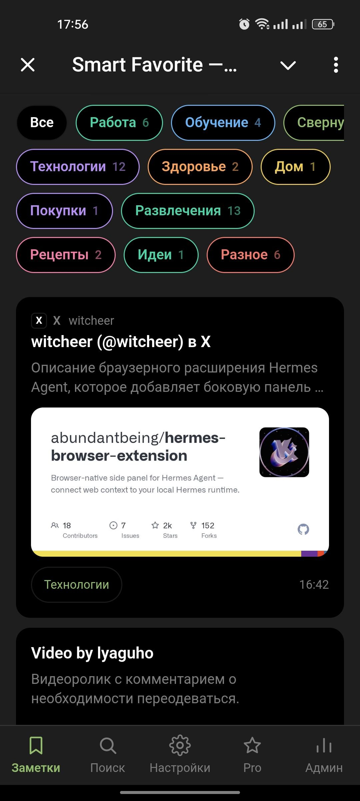
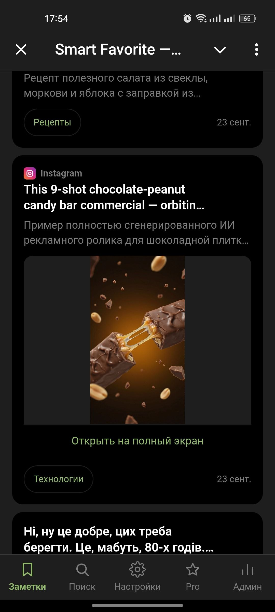
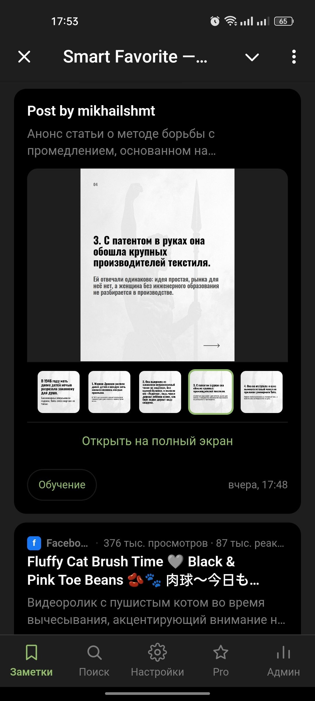

Второй мозг живёт в твоей ленте Telegram
Перешли боту ссылку, фото, голосовое или видео. AI разложит по рубрикам, напишет саммари и вытащит текст с картинки. Найдёшь потом обычной фразой - без тегов и папок.
- 7 форматовссылки, фото, голос, видео, PDF
- 21 день Proв подарок за друга
- 100 ★Pro в месяц, оплата в боте

Что умеет бот
Обычное «сохранить в избранное» превращается в структурированную базу: с автором, картинкой, саммари и рубрикой.
Ссылки - с автором и картинкой
Threads, X, Instagram, YouTube, TikTok, статьи. Бот тянет заголовок, ник автора и превью - даже если страница закрыта и рендерится JS.
Рубрики сами собой
AI раскладывает заметки по твоему списку рубрик и учится на ручных переносах. Перенёс в «Работа» - следующие уедут туда же.
Поиск фразой
«где тот пост про оптимизацию токенов» - и заметка на месте. Ищется и текст, и саммари, и распознанный текст с фото.
Видео: скачать или саммари
По ссылке на YouTube или TikTok бот предложит кнопками скачать ролик или сделать выжимку. Длинное видео сохранится со ссылкой и обложкой.
Голосовые и фото с текстом
Голосовые распознаются и становятся заметкой. С фото бот спросит: распознать текст или сохранить как есть.
Напоминания и рефералка
«Напомнить» на карточке - в срок придёт сообщение в Telegram. Позвал друга: он сохранил 3 заметки - тебе 21 день Pro.
Так выглядит лента
Карточки как в Telegram, только с рубриками, авторами и превью. Скрины из живого мини-приложения.


Три шага
Перешли
Любое сообщение из любого чата - боту. Или ссылку, голосовое, фото, документ.
AI разберёт
Саммари, рубрика, автор, картинка. Дубль ссылки не создаст копию - бот назовёт дату сохранения.
Найди потом
Открой мини-приложение или напиши боту /find с обычной фразой. Всё, что когда-то отложили, - в одном месте.
Цены
Оплата звёздами Telegram прямо в боте. Pro включается сразу после платежа.
Free 0
- Ссылки, текст, фото, голосовые
- Рубрики и саммари от AI
- Поиск по заметкам
- Суточные лимиты на распознавание фото
Pro 100 ★/мес
- Всё из Free без лимитов на AI-разбор
- Годовой план - 830 ★ (выходит 69 ★/мес)
- 21 день Pro в подарок за друга с 3 заметками
Избранное скоро кончится
Telegram «Сохранённое» на 2000 заметок - это свалка, а не база. Перенеси самое нужное туда, где его найдёшь.
Открыть @SmartFavoriteBot